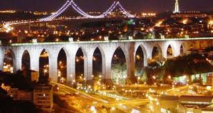
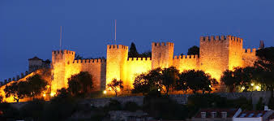
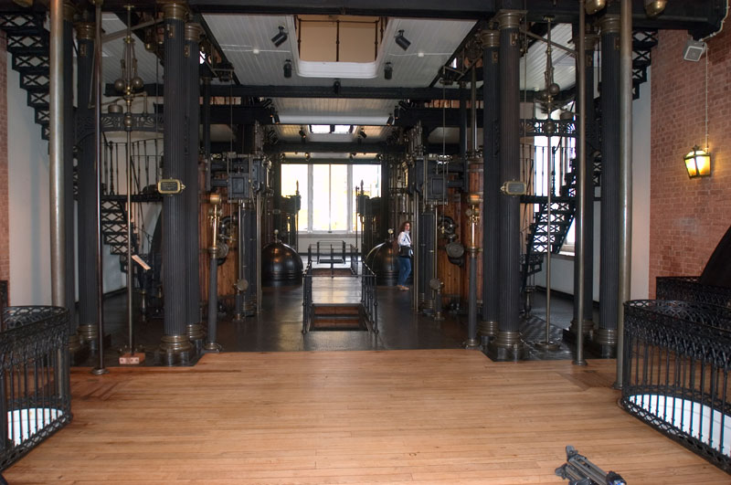

WELCOME TO THE CITY OF LISBON
Art and Architecture
Some of the Architectures in Lisbon
- Castelo de São Jorge (St. George's Castle), (Walk up the hill from Alfama or take bus 737), ☎ +351 218 800 620. Mar-Oct daily 09:00-21:00 and Nov-Feb daily 09:00-18:00. Located up the hill, with a great view over the city and the river. If you have the energy, get there by walking from downtown, going through the fantastic old neighbourhood of Alfama. The ticket office is way before the entrance (where the line is), make sure you buy the ticket first, or you'll be turned back when you eventually reach the entrance. €7 with student discount available.

Castelo de São Jorge
- Museu do Teatro Romano(Roman Theater Museum), Along the way from downtown to St. George's Castle.
- Ponte 25 de Abril,This sister bridge of the San Francisco Golden Gate Bridge was designed by the same architect in 1966 to connect Lisbon with the Setubal peninsula across the Tagus (Tejo) River. Formerly known as the Salazar Bridge, it was renamed after the Carnation Revolution, which on April 25, 1974 ended the dictatorship!
- Ponte Vasco da Gama, It is the longest bridge in Europe (including viaducts), and ninth longest in the world, with a total length of 17.2 km (10.7 mi), including 0.829 km (0.5 mi) for the main bridge, 11.5 km (7.1 mi) in viaducts, and 4.8 km (3.0 mi) in dedicated access roads.
- Aqueduto das Aguas Livres, This is a historic aqueduct in the city of Lisbon, Portugal. It is one of the most remarkable examples of 18th-century Portuguese engineering, including the largest stone arch in the world. The main course of the aqueduct covers 18 km, but the whole network of canals extends through nearly 58 km. The Mãe d'Água (Mother of the Water) reservoir of the Amoreiras, the largest of the water reservoirs, was finished in 1834. This reservoir, with a capacity of 5,500 m³ of water, was designed by Carlos Mardel. It is now deactivated and can be visited as part of the Museu da Água (Water Museum).

Aqueduto das Aguas Livres
Few Places for Arts Lovers
- Museu Nacional de Arte Antiga, Rua das Janelas Verdes. Tu 14:00-18:00; W-Su 10:00-18:00. Portugal's impressive national art collection, including 14-19th century European painting, artefacts of Portuguese contact with the East and Africa and a collection of ecclesiastical treasures. Highlights include Dürer's St Jerome, Hieronymus Bosch's Temptations of St Antony, Nuno Gonçalves' Adoration of St Vincent, and 16th century Japanese paintings of Portuguese traders.
- The Calouste Gulbenkian Museum, Avenida de Berna, 45A (take the metro to São Sebastião or Praça de Espanha Stations), ☎ 21 7823000. Tu-Su 10:00-17:45. Created from the personal collection of Calouste Gulbenkian, an Armenian who longed to see all his treasures displayed in a museum. A nice assortment of Egyptian artifacts, along with paintings by masters such as Rembrandt, Manet, Monet, Renoir, and Cassat. The museum's gardens are worth a visit in and of themselves, as a little oasis in the middle of downtown Lisbon. €5 (permanent+temporary exhibition); half price for students under 25 with ID, holders of the European Youth Card (Euro26) and those aged 65 or over; free entry on Sunday and any other day for those under 12.
- , Praça das Amoreiras, 56/58, ☎ +351 21 3880044/53 (fasvs@fasvs.pt, fax: +351 21 388-0039). M-Sa 11:00-19:00, Su 10:00-18:00. This museum is installed in the restored 18th-century former Royal Silk Factory. It permanent collection covers a wide time period of the works of 20th-century painters Arpad Szenes and Maria Helena Vieira da Silva, and regularly hosts exhibits by their contemporaries. Adults €2.50, students €1.25, kids under 14 free.
- Museu da Electricidade (Electricity Museum), Av. de Brasília, Central Tejo, ☎ +351 21 002 81 30/90 (museudaelectricidade@edp.pt, fax: +351 21 002 81 04). Tu-Su 10AM-6PM. Free.Excellent interactive exposition in a building of former power station, an example how a perfect museum should look.
- Museu da Água (Water Museum). Entrance fee of €1.5 to €2.5, depending on age or discount cards you may use.

Museu da Água
- Lisbon metro. Most of the metro systemis a free art gallery. You'll find art by contemporary artists inspired by the stations' surrounding area. Check the subway webpage for more details on this curiosity. The red line is the newest one and has the best pieces of art.
- Museu do Azulejo. Museu Nacional do Azulejo is one of the most important national museums, for its singular collection, Azulejo (Tile), an artistic expression which differentiates Portuguese culture, and for the unique building where its installed, former Madre de Deus Convent, founded in 1509 by Queen Dona Leonor.
- Museu Colecção Berardo, Centro Cultural de Belém. 10:00 AM - 7:00 PM, closed Mondays. The Berardo Collection Museum is a museum that houses modern and contemporary art, together with modern, temporary exhibits. The permanent collection of the museum consist of the Berardo Collection, which is made up of modern en contemporary art, with major art movements like abstract expressionism, Abstraction-Création, action painting, body Art, constructivism, cubism, De Stijl, digital art, experimental art, geometric abstraction, kinetic art, minimal art, neo-expressionism, neo-plasticism, neo-Realism, op art, photography, photorealism, pop art, realism, suprematism, surrealism. The collection also consist of many important artists like Piet Mondrian, Andy Warhol, Roy Lichtenstein, Pablo Picasso and Jackson Pollock. Free admission.
- Museu da Marinha, Centro Cultural de Belém, ☎ 213620019. Open 10AM-5PM in winter, 10AM-6PM in summer. The interesting Maritime Museum is one of the most important in Europe, evoking Portugal's domination of the seas. Its colossal 17,000 items are installed in the west wing of Jerónimos Monastery, and include model ships from the Age of Discovery onward. The oldest exhibit is a wooden figure representing the Archangel Raphael that accompanied Vasco da Gama on his voyage to India. Entry fee €4.
- Pavilhão do Conhecimento The Pavilion of Knowledge - Ciência Viva is an interactive science and technology museum that aims to make science accessible to all, stimulating experimentation and exploration of the physical world.